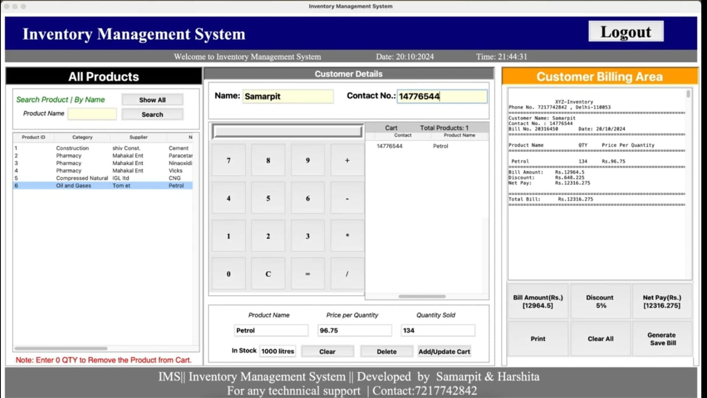

Many small businesses face challenges managing inventory due to manual tracking and outdated systems, leading to stock errors and inefficiencies. This project aims to develop a Python-based Inventory Management System with a simple GUI to handle item tracking, stock updates, billing, and reporting. The goal is to provide an efficient, user-friendly, and cost-effective solution for real-time inventory control and improved business operations.
The solution is a Python-based Inventory Management System with a graphical user interface that allows users to add, update, delete, and view inventory items. It automates billing, maintains transaction records, and provides real-time stock updates. The system is designed to be lightweight, easy to use, and suitable for small businesses, eliminating the need for manual tracking and reducing errors. By streamlining inventory operations, it improves accuracy, saves time, and enhances overall efficiency.
The system is intended for small to medium-sized businesses needing efficient inventory control without complex infrastructure. It supports basic inventory operations, billing, and reporting through a desktop-based GUI. The software can be enhanced with features like user authentication, barcode scanning, low-stock alerts, and data export. It is scalable for different business types and can be extended to support multi-user access or cloud integration. The current scope focuses on offline usage with local data storage using files or databases.
The target users for the Python-based Inventory Management System fall into two main categories, both aiming to streamline and enhance business operations through effective inventory tracking.
Our Setup
Real Time Data Visulaizations